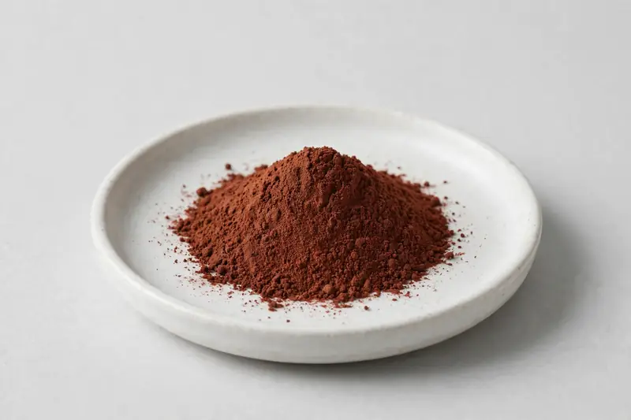

Salvia miltiorrhiza — the danshen root, positioned around cardiovascular-oriented formulations.

Overview
Salvia miltiorrhiza extract comes from the danshen root and carries two distinct marker families: the lipophilic tanshinones and the water-soluble salvianolic acids, with salvianolic acid B most often referenced. Formulators working on cardiovascular-oriented botanical blends ask for it as a multi-marker ingredient. We source through vetted partner producers as a Xi'an-based trading company.
Specifications below reflect commonly requested options in the market — not a stock list. Share your target spec and we'll confirm exactly what we can supply, honestly.
| Specification | Details |
|---|---|
| Botanical identity | Salvia miltiorrhiza, root |
| Marker compound | Tanshinone IIA — commonly requested: 5-10% (HPLC); salvianolic acid B — commonly requested: 5-10% (HPLC) |
| Appearance | Reddish-brown to dark red-brown fine powder |
| Analytical methods | Methods referenced in buyer specifications: HPLC |
| Mesh size | Typically 80–100 mesh (confirm per inquiry) |
| Testing | COA/TDS arranged on request; scope agreed per your spec |
Applications
Documentation
We don't claim in-house labs or certifications we don't hold. COA and TDS documents can be arranged on request, and testing scope is agreed against your specification before supply.
FAQ
Related products
Beta vulgaris
Key marker: Nitrates / Betaines
View specs →Prunus cerasus
Key marker: Anthocyanins
View specs →Camellia sinensis
Key marker: EGCG / Polyphenols
View specs →Panax notoginseng
Key marker: Notoginsenosides
View specs →Cistanche deserticola
Key marker: Echinacoside
View specs →Send your target spec and volumes — we'll respond with a tailored quotation.
Request a Quote